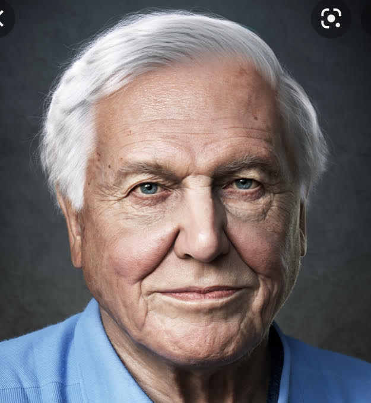
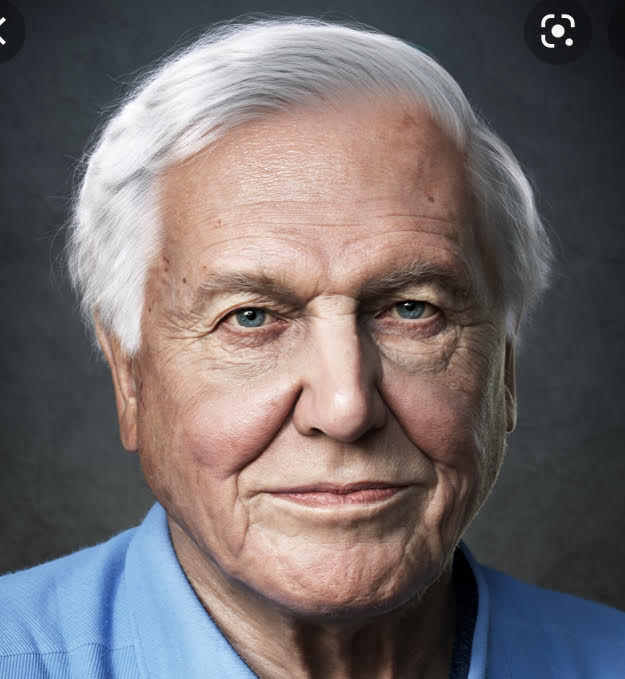

Climate activists
Eight climate activists keen to change the world we live in. We could take them as
an exaple and inpire our family members and friends around.
Persistance and even small changes always counts in the long run.
We are all heros in our own world.
Feel free hover over pictures to see more information about the activists.
 
